Parque Nacional Mochima
Este parque abrange uma parte da costa e uma cadeia de ilhas em alto mar a leste de Puerto La Cruz até Cumaná. As principais atrações aqui são as praias e o mergulho. É possível acessar as ilhas de barco a partir de Puerto La Cruz, Santa Fé e Mochima.
Salto Ángel
No coração do país, onde as montanhas de mesa se erguem como monólitos gigantes na paisagem circundante, encontra-se a Cachoeira do Salto Ángel. Com uma queda de 979 metros, é a cachoeira mais alta do mundo e uma das mais destacadas da América do Sul.
Parque Nacional Los Médanos de Coro
O Parque Nacional Los Médanos de Coro oferece vistas surpreendentes, com dunas ondulantes de areia típicas de uma paisagem desértica. As dunas de areia, conhecidas localmente como médanos, rolam pelo...
Arquipélago Los Roques
Praias banhadas pelo sol, águas turquesas, recifes de coral e um desenvolvimento modesto sem hotéis de grande altura são o que atrai os viajantes para essa bela cadeia de ilhas, a 160 quilômetros ao norte da costa central da Venezuela.
Outros Climas
Localizado entre 650 e 1600 metros de altitude. A temperatura média anual varia de 18 °C a 23 °C. Exemplos desse clima são encontrados em localidades como Mérida...
Encontra-se entre os 1600 e 2400 metros, as temperaturas variam de 13 °C a 18 °C. Exemplos desse clima podem ser encontrados em San Antonio de Los Altos...
Situa-se entre 2400 e 3200 metros aproximadamente, onde as temperaturas variam entre 8 °C e 13 °C. Exemplos desse clima podem ser encontrados em Mucuchíes, Caracas...
Localiza-se entre 3200 e 4150 metros aproximadamente, com temperaturas entre 3 °C e 8 °C.
Está localizado entre 4150 m e 4700 m, com temperaturas entre 0 °C e 3 °C. São encontrados em diversas áreas de paramos elevados, como a Sierra Nevada de Mérida...
Encontra-se entre 4700 e 5070 metros e possui um clima de 3 °C a -10 °C. O clima glacial está localizado em áreas mais altas do país, como os glaciares do Pico El León...
Clima muito quente
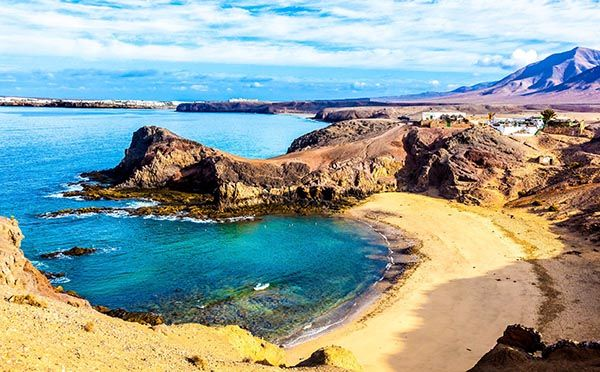Do nível do mar até 300 metros de altitude. A temperatura média anual é superior a 26 °C. Abrange a maioria do território nacional. Exemplos desse clima são cidades localizadas em áreas áridas como Maracaibo, Punto Fijo, Coro, e cidades localizadas em regiões de savana como San Fernando de Apure, Barinas, Guanare e San Carlos.
A história da Venezuela é marcada por uma rica diversidade cultural e uma série de eventos que moldaram o país ao longo dos séculos. Desde as civilizações indígenas pré-colombianas até a colonização espanhola e a luta pela independência, a Venezuela tem uma história fascinante.
Antes da chegada dos europeus, a Venezuela era habitada por diversas culturas indígenas, como os caribes, aruaques e timoto-cuicas. Essas civilizações desenvolveram sociedades complexas, com avançadas práticas agrícolas e sistemas políticos organizados.
No final do século XV, o explorador espanhol Cristóvão Colombo chegou às costas venezuelanas. A partir desse momento, a Venezuela tornou-se uma colônia espanhola, sujeita ao domínio e exploração dos conquistadores. Durante esse período, houve uma exploração intensiva dos recursos naturais, como o ouro e a prata.
No início do século XIX, a Venezuela, assim como outras colônias latino-americanas, começou a buscar sua independência da Espanha. Liderada por figuras proeminentes como Simón Bolívar e Francisco de Miranda, a luta pela independência ganhou força. Em 1811, a Venezuela proclamou sua independência, mas a guerra continuou até 1821, quando finalmente conquistaram a liberdade.
Após a independência, a Venezuela passou por um período de instabilidade política, com uma sucessão de governos e líderes que enfrentaram desafios internos e externos. Houve uma alternância entre governos democráticos e autoritários ao longo do século XX, com períodos de ditaduras militares e golpes de Estado.
A descoberta de grandes reservas de petróleo na década de 1910 marcou um ponto de virada na história venezuelana. O petróleo se tornou o principal motor da economia do país, e a Venezuela se tornou um dos maiores exportadores mundiais de petróleo. No entanto, a dependência excessiva do petróleo também levou a desafios econômicos e instabilidade política.
Nos últimos anos, a Venezuela enfrentou uma crise econômica e política significativa. Questões como hiperinflação, escassez de alimentos e remédios, bem como tensões políticas internas, têm afetado a estabilidade do país. Essa situação complexa tem gerado impactos sociais e levado a uma migração em massa de venezuelanos para outros países.
A história da Venezuela é um reflexo das lutas e transformações que ocorreram ao longo do tempo. Desde as civilizações indígenas até os desafios contemporâneos, a Venezuela continua a moldar sua história e enfrentar os obstáculos que surgem em seu caminho.
Simón Bolívar
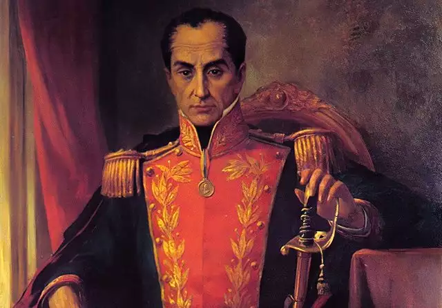Francisco de Miranda
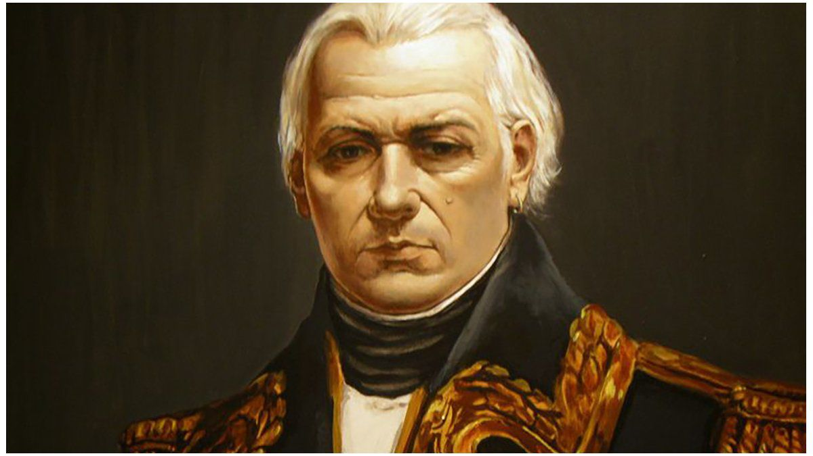Antonio José de Sucre
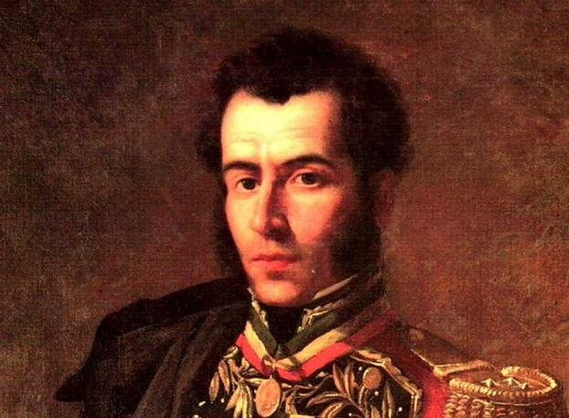José Antonio Páez
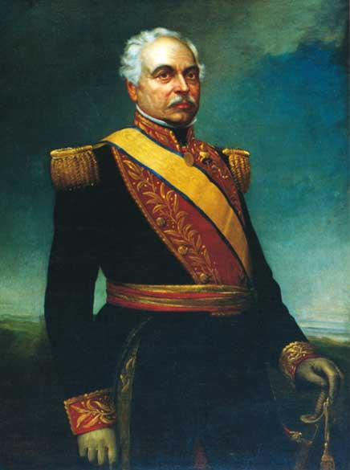Santiago Mariño
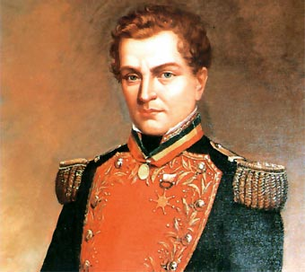Rafael Urdaneta
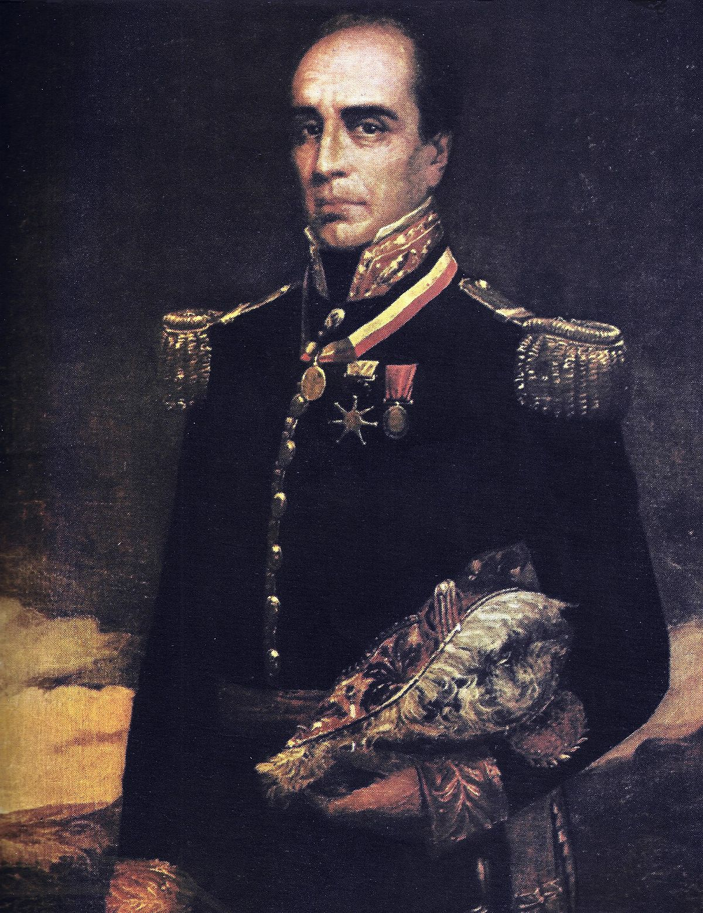José Félix Ribas
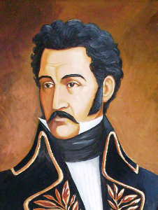Juan Germán Roscio
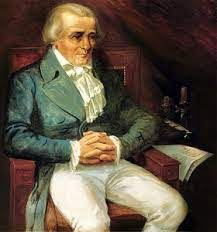Andrés Bello
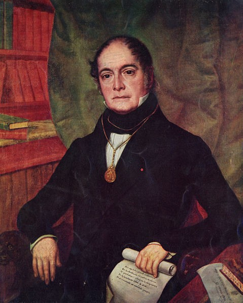Francisco Javier Pulgar
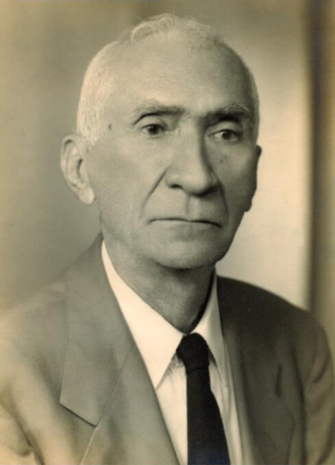